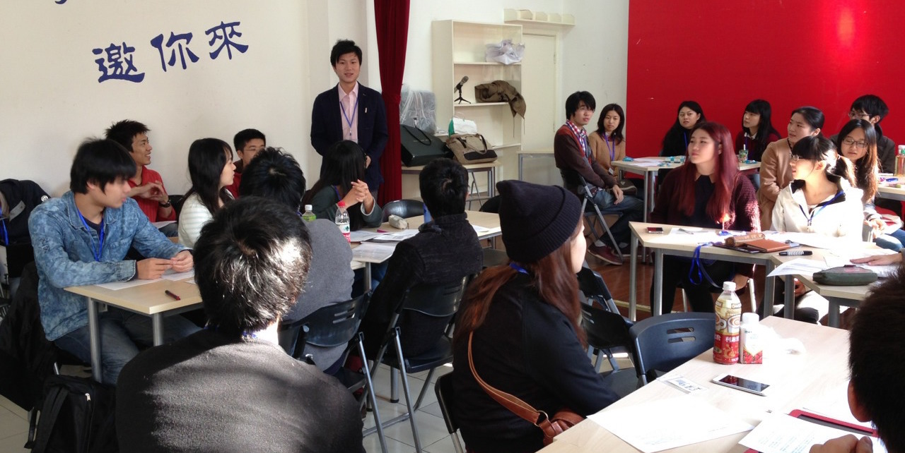
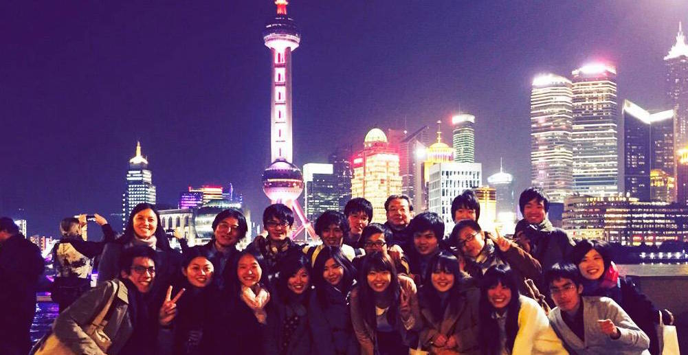
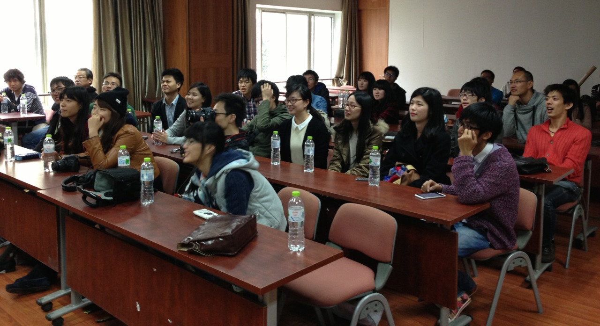

JCSN 第二回上海・杭州交流会
［日程］2014年11月14日～11月18日（4泊5日）
［場所］中国 上海市・杭州市
［スケジュール］
11月14日（金）
成田空港→浦東空港 ＊空港集合
チャーターバスにて移動
午後 福楽門工業設計有限公司（㈱フォルム中国法人）の方とともに上海市内百貨店における三菱レイヨンクリンスイ製浄水器の販売状況視察
夜 NPO主催夕食会
11月15日（土）チャーターバスにて移動
午後 福楽門工業設計有限公司（㈱フォルム中国法人）の方とともに上海市内百貨店における三菱レイヨンクリンスイ製浄水器の販売状況視察
夜 NPO主催夕食会
終日 復旦大学シンポジューム（グループ別討論・校内参観）
夜 復旦大学側参加者と共に夕食会
11月16日（日）夜 復旦大学側参加者と共に夕食会
午前 高速鉄道にて移動（上海→杭州）
午後 浙江大学シンポジューム（アイスブレーキング・グループ別討論・校内参観）
夜 浙江大学側参加者と共に夕食会
11月17日（月）午後 浙江大学シンポジューム（アイスブレーキング・グループ別討論・校内参観）
夜 浙江大学側参加者と共に夕食会
チャーターバスにて移動
午前 浙江省建設投資集団有限公司建設現場視察及び若手社員の方との意見交換会
午後 杭州観光（浙江大学学生とともに）
11月18日（火）午前 浙江省建設投資集団有限公司建設現場視察及び若手社員の方との意見交換会
午後 杭州観光（浙江大学学生とともに）
午前 高速鉄道にて移動（杭州→上海）
午後 中国（上海）自由貿易区視察
浦東空港→成田空港 ＊空港解散
［宿泊ホテル］午後 中国（上海）自由貿易区視察
浦東空港→成田空港 ＊空港解散
上海 GENTING STAR
杭州 VICTORIA REGAL HOTEL
［協賛］NPO日中交流推進機構・㈱フォルム杭州 VICTORIA REGAL HOTEL
［協力］㈱トモノカイ・浙江省建設投資集団有限公司
［後援］在上海日本国領事館

復旦大学で討論の様子

復旦大学の学生との集合写真

上海の観光名所外灘にて

浙江大学で討論の様子

浙江大学の学生との集合写真

国有企業の建設現場視察
【学生交流会 討論の概要】
〈复旦大学〉
・都市開発A
我々のグループでは日中両国における都市への人口一極集中の現状とそれに対する個人的な意見を共有した上で、中国において人口抑制の為に採られている戸籍制度の問題点について議論した。この議論を通じ、中国においては戸籍の為に生まれながらにして「格差」が存在していることを非常に実感させられた。
・都市開発B
日中両国で都市人口の増加が進んでいる中、今後、都市のあるべき姿について議論した。都市化が進んでいくことは効率的な経済発展を進めていくことができる一方、農村からの貧困人口の増加、環境、交通渋滞の問題がデメリットとして顕在化するという意見が出た。
また、中国では都市、農村で戸籍が二元化されていることで行政サービスに格差が出るという独自の問題があること、日本における地域振興の取り組みについても意見を交わしあった。
・経済また、中国では都市、農村で戸籍が二元化されていることで行政サービスに格差が出るという独自の問題があること、日本における地域振興の取り組みについても意見を交わしあった。
アベノミクスとリコノミクスに関する議論を中心に、日中両国ではどのような見方がなされているか、日中経済が国民生活や大学生の就職活動にどのような影響を与えているのか、日中双方の大学生の視点での意見交換を行った。また、政治関係が冷え込む中で今後の更なる経済連携の強化を図るためには、密接な民間交流・両国の正しい相互理解が必要不可欠であることを再確認した。
・環境
中国の発電エネルギーについて、現状とクリーンエネルギーの可能性をディスカッションした。中国では、クリーンエネルギーによる発電を今後推進する政策をとっているが、国全体の電力使用量が2040年までにおよそ2倍増えるため、大気汚染の主な原因となる石炭使用量の大幅削減には到底つながらない。一衣帯水の日本と中国は、クリーンエネルギーの技術開発や導入において協力すべきだという結論に至った。リサーチしたデータに基づきながらも、学生同士ざっくばらんに話すことができ、とてもおもしろかった。
・女性の社会進出
事前の調査では、日本女性と異なり中国女性は結婚や出産を原因として就業を止めることが少ないということが分かっていた。討論においては、参加者が自己の経験や見聞をもとにテーマについて語った。中国では育児の一部を祖父母が担うため、女性の育児負担が軽減されていることが多いということが分かり、興味深かった。さらに、関連する法制度についても検討した。
〈浙江大学〉・観光政策
今回はどのようにして日中両国の観光誘致を行なっていけばよいのかを話し合った。日本の大河ドラマ誘致による地方都市の観光業発展の例にも見られるように、中国でもテレビ番組に出演することで観光誘致をしている。また、京都の景観保護政策と同様に、中国の杭州の西湖付近でもビルの高さ制限を設けているようだった。したがって今後はビザ取得の制限の調整等の政策を行なうことで、観光誘致の成果がより得られるのでないかという結論に至った。
・杭州の観光開発
開発グループAは浙江の観光開発について話し合いを行った。初めに浙江の観光の現状について深掘りを行った。挙げられた問題点は二点ある。一点目は日本人の観光客が少ないこと。二点目は中国の休暇の時期に観光客が集中してしまうことである。これらに基づき、休暇が中国人と被らない日本人を呼ぶメリットがあると考えその方法について考察を行った。ここで提案された案の一つがドラマやアニメなどのサブカルチャーを利用した観光誘致である。また、鉄道等の民営化による競争の誘発によって観光誘致を活発化させることも発案された。
・経済
経済班ではまず中国人学生が強く関心を示した日本の消費税の問題について議論した。消費税の問題は日本の問題であると捉えていた我々にとって、中国人学生が日本の消費税問題に興味を持っていたこと自体が意外だった。我々は日本の消費税問題の現状を簡単に説明した後、彼らに日本の財政税制度についての印象や意見を聞いた。また、我々が関心を示していた中国企業の成長の望ましいあり方について議論した。日中両国が抱える経済問題について中国人学生が何を知り、どのように考えているのかをしれて非常に有意義なものとなった。
・環境
浙江大学にて、「生物多様性の保全」をテーマに討論を行った。今回は特に乱獲の問題点について検討した。鰻や鮪、あるいはフカヒレや燕の巣といった具体例を想定しながら、伝統的食文化の保存と生物多様性の保全とがどう調和していくべきかを議論した。中国側の学生は政府の規制等によって時と共に問題が解決すると考える傾向にあったが、JCSN側の学生はやや悲観的であり、乱獲を抑えるのは困難であると考えていた点が興味深い。
・女性の社会進出
アジアの中だけではなく、中国女性の社会進出率が高い。しかも、管理層での女性社員の比率も５１%に達し、世界で一番高い比率である。女性の就職先は公務員、金融機構が人気らしい。公務員は女性にとって安定感があり、出産で産休がとれるし、給料ももらえるのが原因である。中国の家庭には、男性が家事を手伝う場合が多い、または男女平等に分担する。その一方、日本の場合には女性が家事をする。中国では就職する時大学の成績は採用に大きいな影響があり、新卒には日本ほどこだわりしない。むしろ、経験がある方が採用されやすい。
【参加者感想】※一部の参加者のものを掲載
➀
今回の訪中には二つのテーマがあった。日中学生交流と中国の経済状況の視察である。本稿ではこの二つのテーマに関して感想をまとめたいと思う。
まず、一つ目のテーマである日中学生交流について述べる。今回の交流会に際しては、复旦大学の中日学生サロンと浙江大学の中日文化交流協会のメンバーが準備に奔走してくれ、予想を上回る歓待ぶりに非常に感動した。复旦大学・浙江大学の学生は日本に対する造詣も深い上に学問に対して真摯であり、彼らがこれからの中国を背負っていくエリートだということを改めて認識させられた。本交流会を通じて日本側学生が彼らから学びを得ると共に、彼らに対しても学びを与えられていたら、と願っている。
続いて二つ目のテーマであった経済状況の視察について感想を述べたい。この五日間で最も衝撃的だったのは、前回訪中時からの物価の上昇と上海・杭州エリアの富裕さである。私は今回で四回目の訪中で、とりわけ上海を訪れるのは二度目なのだが、前回と比べてこれ程生活水準が向上しているとは思いも寄らなかった。复旦大学学生の家庭教師の時給は我々のそれと殆ど変わらず、浙建集団の農民工の月給は日本の大卒の初任給に並ぶ。上海・杭州エリアに限って言えば、中国が発展途上国だというのは過去の話だと断言できるだろう。また、四日目の浙江省建設投資集団訪問の際には役員の方と直接話をする機会に恵まれたが、彼からは日本がマーケットとしていかに魅力がないかということを説かれ、日本経済の先行きの暗さを指摘された。これらの体験から、やはり日本は技術力で優位にあるうちに購買力の向上が著しい中国などアジアの新興国への進出を加速させるべきだと改めて実感させられた。この危機感こそが今回の訪中で得た第二の成果と言えるだろう。
さて、本交流会はNPO日中推進交流機構や協賛・協力企業の皆様、そして复旦大学・浙江大学の学生の協力がなければ成功をおさめることは出来なかったと思う。最後になるが、この場を借りて感謝の意を示したい。皆さん、ありがとうございました。
② 第二回目の参加となった今年の交流会は、昨年度に引き続き行なわれる上海での活動と、今年度初の開催となる杭州での活動という2つの主なイベントを含んでおり、どのような交流会になるのであろうかと出発前から期待に胸を膨らましていました。無事に上海に到着し、その後上海フォルムの方に現地を案内していただき、クリンスイという浄水器が売られている電化量品店・百貨店を視察しました。この浄水器はJCSN交流会と並行して行なわれているJCSNプログラムにおいてケーススタディとして扱っていたため、役員の私としては是非とも様々なことをお聞きしたいと思っていました。日本で聞いたことによると同業他社は2社程度ということでしたが、実際の百貨店等には12〜13社の浄水器の展示があり、中国での市場競争の激しさを知りました。また、CM等の通常広告のみならず中国で現在流行している生放送のテレビショッピングで販売をすることで売上を伸ばすという工夫や、浄水した水でメダカを飼育するという特徴的な展示方法によるアピールなどの工夫がみられ、日本にいるだけでは知ることの出来なかったことを現地に来て学ぶことが出来ました。
交流会2日目。この日は復旦大学を訪れ、学生と討論を行ないました。今年のテーマは経済・女性の社会進出・環境・都市開発であり、各班に分かれて率直な意見を交換しました。私は都市開発班だったので、日中両国で都市に人口が集中する原因とその解決策について考えました。都市に来るのは若者が多いということで、なぜ都市が魅力的なのかということを大学生目線から考えたところ、都会に対する憧れや仕事の機会、国際交流の機会などという日中共通の理由が多く出てきた一方、中国では農村戸籍・都市戸籍の問題とそれに関する政策が大きく影響しているのではという声も聞かれました。また、日本では都市への人口流出によって引き起こされる地方の少子高齢化・過疎化が叫ばれて久しいですが、以前まで一人っ子政策を行ない人口減少に励んでいた中国においてでさえ、地方において高齢化が進み、大きな問題となっているという事実は衝撃的でした。
交流会3日目となった11月16日は早朝に上海を出発し、高速鉄道で杭州に向かいました。都会から田舎、そして都会へと次々と移り変わる景色を眺めているとあっという間に杭州に到着しました。これから浙江大学で行なわれるディスカッションに向けて気合いを入れながら駅の改札を出ると、そこには日中友好の横断幕を手に持って大勢の浙江大学生が出迎えをしてくれていました。駅という人目に付く場所で （そして駅にいる人の全員が日本に対して良い印象を抱いているかもわからない状態で）そのような形で迎えてくれることは大胆だと思いましたが、逆にその熱烈な歓迎は大変嬉しかったです。この出来事を通して、中国においては日本で報道されているような反日的な要素は意外と少なく、学生同士が手を結び合っていく中で国民レベルでの友好が図られていくのではないかと強く思うようになり、とても温かい気持ちになりました。昼食後はゲーム形式でキャンパス巡りをしたり、日本の有名番組のパロディで日中クイズ大会をやったりして交流を深めました。そしてディスカッションでは日中の観光政策について話し合いました。浙江大学の学生に大河ドラマやアニメ放映による地方観光業発展について話すと大変興味を持っていただき、逆に日本の歴史について中国人学生から様々なことを学ぶという逆転の現象も起きました。杭州には西湖という世界遺産があるため、その周辺では高層ビルの建築が規制されているという話や日本へ観光に行くときのビザの取得制限が近頃緩和された話などを聞きました。また、日本において地方の観光業発展の話をすると必ずといっていいほど出てくる論点が交通機関に関してですが、杭州の場合は仮に交通機関を整備したとしても、上海から車やバスで来る人が多いためそれほど観光客の増加は見込まれないといった意見もあり、両国の共通点や相違点を考えていく中で参考になりました。
このようにして復旦大学・浙江大学生との討論という学生間の主な交流イベントを行なった後、4•5日目には中国の経済・企業について知るために杭州に拠点を置く国有企業の浙建集団への訪問、上海自由貿易試験区への視察を行ないました。日本では「国有企業」という言葉へのイメージとして「独占」などのあまり良くないイメージを持っている人が多く、まして中国の国有企業となると政治的な絡みや賄賂などが想像されうるという状況ですが、実際訪問させていただくと、活気溢れる中で働かれている現場の方々、国有企業という名に恥じぬよう責任を持って仕事をしていらっしゃる管理職の方々が大勢いらっしゃりました。国有企業であることによるメリットとともにデメリットもお話いただき、この企業に入社したきっかけも教えていただいたりと、日本の企業とは違う現場を見ることができました。そして上海の自由貿易試験区では中国の貿易や経済政策に対する熱意を感じ取りました。もちろん日本でもアベノミクスを始めとして、戦略特区等で経済の活性化を図り、国際競争力を強化しようという試みはみられますが、中国のような積極性も今後の日本には必要であると思いました。
今回の交流会では、実際に中国を訪問することで中国の魅力を堪能し学生間交流を深めて日中友好の架け橋の第一歩を踏み出す大学生としての活動に意義を見いだしたのと同時に、初めて国有企業や広大な試験特区に入ることで一人の大学生としての立場・存在の脆弱さも実感しました。今の自分には日中の政治はもとより経済も変えることは微塵にも不可能ですし、一部の大学生と交流することから発展させて国民全体で本当の意味での日中友好を遂げていくことはかなり難しいですが、大学生という自由な身分である今のうちに学べるだけ学び、経験出来ることはとことん経験して、社会に出てから何らかの形で日中友好に貢献出来ればと思いました。
まず、一つ目のテーマである日中学生交流について述べる。今回の交流会に際しては、复旦大学の中日学生サロンと浙江大学の中日文化交流協会のメンバーが準備に奔走してくれ、予想を上回る歓待ぶりに非常に感動した。复旦大学・浙江大学の学生は日本に対する造詣も深い上に学問に対して真摯であり、彼らがこれからの中国を背負っていくエリートだということを改めて認識させられた。本交流会を通じて日本側学生が彼らから学びを得ると共に、彼らに対しても学びを与えられていたら、と願っている。
続いて二つ目のテーマであった経済状況の視察について感想を述べたい。この五日間で最も衝撃的だったのは、前回訪中時からの物価の上昇と上海・杭州エリアの富裕さである。私は今回で四回目の訪中で、とりわけ上海を訪れるのは二度目なのだが、前回と比べてこれ程生活水準が向上しているとは思いも寄らなかった。复旦大学学生の家庭教師の時給は我々のそれと殆ど変わらず、浙建集団の農民工の月給は日本の大卒の初任給に並ぶ。上海・杭州エリアに限って言えば、中国が発展途上国だというのは過去の話だと断言できるだろう。また、四日目の浙江省建設投資集団訪問の際には役員の方と直接話をする機会に恵まれたが、彼からは日本がマーケットとしていかに魅力がないかということを説かれ、日本経済の先行きの暗さを指摘された。これらの体験から、やはり日本は技術力で優位にあるうちに購買力の向上が著しい中国などアジアの新興国への進出を加速させるべきだと改めて実感させられた。この危機感こそが今回の訪中で得た第二の成果と言えるだろう。
さて、本交流会はNPO日中推進交流機構や協賛・協力企業の皆様、そして复旦大学・浙江大学の学生の協力がなければ成功をおさめることは出来なかったと思う。最後になるが、この場を借りて感謝の意を示したい。皆さん、ありがとうございました。
② 第二回目の参加となった今年の交流会は、昨年度に引き続き行なわれる上海での活動と、今年度初の開催となる杭州での活動という2つの主なイベントを含んでおり、どのような交流会になるのであろうかと出発前から期待に胸を膨らましていました。無事に上海に到着し、その後上海フォルムの方に現地を案内していただき、クリンスイという浄水器が売られている電化量品店・百貨店を視察しました。この浄水器はJCSN交流会と並行して行なわれているJCSNプログラムにおいてケーススタディとして扱っていたため、役員の私としては是非とも様々なことをお聞きしたいと思っていました。日本で聞いたことによると同業他社は2社程度ということでしたが、実際の百貨店等には12〜13社の浄水器の展示があり、中国での市場競争の激しさを知りました。また、CM等の通常広告のみならず中国で現在流行している生放送のテレビショッピングで販売をすることで売上を伸ばすという工夫や、浄水した水でメダカを飼育するという特徴的な展示方法によるアピールなどの工夫がみられ、日本にいるだけでは知ることの出来なかったことを現地に来て学ぶことが出来ました。
交流会2日目。この日は復旦大学を訪れ、学生と討論を行ないました。今年のテーマは経済・女性の社会進出・環境・都市開発であり、各班に分かれて率直な意見を交換しました。私は都市開発班だったので、日中両国で都市に人口が集中する原因とその解決策について考えました。都市に来るのは若者が多いということで、なぜ都市が魅力的なのかということを大学生目線から考えたところ、都会に対する憧れや仕事の機会、国際交流の機会などという日中共通の理由が多く出てきた一方、中国では農村戸籍・都市戸籍の問題とそれに関する政策が大きく影響しているのではという声も聞かれました。また、日本では都市への人口流出によって引き起こされる地方の少子高齢化・過疎化が叫ばれて久しいですが、以前まで一人っ子政策を行ない人口減少に励んでいた中国においてでさえ、地方において高齢化が進み、大きな問題となっているという事実は衝撃的でした。
交流会3日目となった11月16日は早朝に上海を出発し、高速鉄道で杭州に向かいました。都会から田舎、そして都会へと次々と移り変わる景色を眺めているとあっという間に杭州に到着しました。これから浙江大学で行なわれるディスカッションに向けて気合いを入れながら駅の改札を出ると、そこには日中友好の横断幕を手に持って大勢の浙江大学生が出迎えをしてくれていました。駅という人目に付く場所で （そして駅にいる人の全員が日本に対して良い印象を抱いているかもわからない状態で）そのような形で迎えてくれることは大胆だと思いましたが、逆にその熱烈な歓迎は大変嬉しかったです。この出来事を通して、中国においては日本で報道されているような反日的な要素は意外と少なく、学生同士が手を結び合っていく中で国民レベルでの友好が図られていくのではないかと強く思うようになり、とても温かい気持ちになりました。昼食後はゲーム形式でキャンパス巡りをしたり、日本の有名番組のパロディで日中クイズ大会をやったりして交流を深めました。そしてディスカッションでは日中の観光政策について話し合いました。浙江大学の学生に大河ドラマやアニメ放映による地方観光業発展について話すと大変興味を持っていただき、逆に日本の歴史について中国人学生から様々なことを学ぶという逆転の現象も起きました。杭州には西湖という世界遺産があるため、その周辺では高層ビルの建築が規制されているという話や日本へ観光に行くときのビザの取得制限が近頃緩和された話などを聞きました。また、日本において地方の観光業発展の話をすると必ずといっていいほど出てくる論点が交通機関に関してですが、杭州の場合は仮に交通機関を整備したとしても、上海から車やバスで来る人が多いためそれほど観光客の増加は見込まれないといった意見もあり、両国の共通点や相違点を考えていく中で参考になりました。
このようにして復旦大学・浙江大学生との討論という学生間の主な交流イベントを行なった後、4•5日目には中国の経済・企業について知るために杭州に拠点を置く国有企業の浙建集団への訪問、上海自由貿易試験区への視察を行ないました。日本では「国有企業」という言葉へのイメージとして「独占」などのあまり良くないイメージを持っている人が多く、まして中国の国有企業となると政治的な絡みや賄賂などが想像されうるという状況ですが、実際訪問させていただくと、活気溢れる中で働かれている現場の方々、国有企業という名に恥じぬよう責任を持って仕事をしていらっしゃる管理職の方々が大勢いらっしゃりました。国有企業であることによるメリットとともにデメリットもお話いただき、この企業に入社したきっかけも教えていただいたりと、日本の企業とは違う現場を見ることができました。そして上海の自由貿易試験区では中国の貿易や経済政策に対する熱意を感じ取りました。もちろん日本でもアベノミクスを始めとして、戦略特区等で経済の活性化を図り、国際競争力を強化しようという試みはみられますが、中国のような積極性も今後の日本には必要であると思いました。
今回の交流会では、実際に中国を訪問することで中国の魅力を堪能し学生間交流を深めて日中友好の架け橋の第一歩を踏み出す大学生としての活動に意義を見いだしたのと同時に、初めて国有企業や広大な試験特区に入ることで一人の大学生としての立場・存在の脆弱さも実感しました。今の自分には日中の政治はもとより経済も変えることは微塵にも不可能ですし、一部の大学生と交流することから発展させて国民全体で本当の意味での日中友好を遂げていくことはかなり難しいですが、大学生という自由な身分である今のうちに学べるだけ学び、経験出来ることはとことん経験して、社会に出てから何らかの形で日中友好に貢献出来ればと思いました。